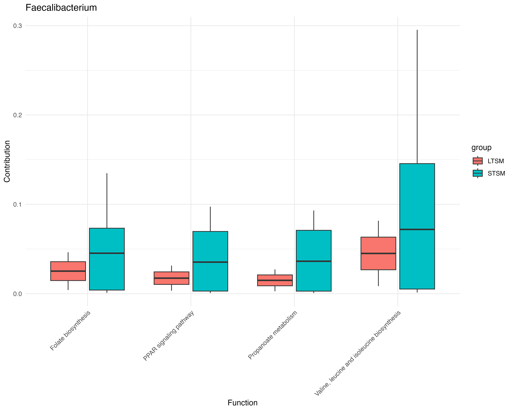

Demonstration study for example data
1. Data introduction and differential analysis:
We are using a tumor microbiome dataset from Tumor Microbiome Diversity and Composition Influence Pancreatic Cancer Outcomes. The paper explore the association bewteen microbiome and different survival status (long term survival (LTS) and short term survival (STS)) among pancreatic patient. We already have our stratified PICRUST2 output and phyloseq object. We are going to explore which functions are significant for each genus.
## Load phyloseq object
load("tumor_asv.RData")
## Subset patient
ps1 <- subset_samples(ps, Cohort=="MDA")
## Differential analysis (pred_metagenome_contrib.tsv.gz is your original stratified output, ps1 is your phyloseq object, group is the response variable, the default taxonomy level is genus)
result <- pathway_sdaa_v2(stratified_path = "picrust2_out/KO_metagenome_out/pred_metagenome_contrib.tsv.gz", physeq = ps1, group = "group", direction = "taxa", p.adjust.method = "BH", taxon_level="Class")2. Global analysis (Functions to taxa)
2.1 Sankey Diagram
Sankey_diagram() visualizes flows from taxa to functions, with link width proportional to |logFC| and link color indicating differential direction (up/down). In the Sankey diagram, function IDs are grouped into higher-level pathway descriptions using the internal reference tables provided by the MicroFun R package.
p1 <- p1 <- tax2fun_sankey(result1, node_neutral = "green")
p1Left nodes = genera you tested.
Right nodes = KEGG level-1 functional categories (Metabolism, Cellular Processes, Genetic Information Processing, Environmental Information Processing, Human Diseases, Organismal Systems).
Links = significant functions for a genus, aggregated to a higher level (width = how much that genus contributes to that category after aggregation).
Colors (red/blue) usually encode group direction (e.g., higher in case vs control). If that’s your mapping, you can talk about directionality too.
From the plot, (i) the dominant KEGG level-1 categories by total aggregated flow—often led by Metabolism—and give each category’s percent share (especially useful if link colors encode groups); (ii) the top contributing genera per category (e.g., the top 3–5 by aggregated weight).
We also provide option taxa_list if you want to plot sankey diagram for some specific taxa
## If you are interested specifically in c__Bacilli, c__Cyanobacteriia, c__Blastocatellia
p1 <- tax2fun_sankey(result1, node_neutral = "green",taxa_list = c("Bacilli", "Cyanobacteriia", "Blastocatellia"))
p12.2 Box plot to check real differential between groups
## function_box() will output a plot list of all the genus which include siginificant functions
p2 <- tax2fun_box(stratified_path = "picrust2_out/KO_metagenome_out/pred_metagenome_contrib.tsv.gz", pathway_sdaa_result = result, physeq = ps1, group = "group")If you are interested in specific genus, you can plot:
# your targets (spell however; we'll fuzzy match too)
targets <- c("Streptococcus", "Acinetobacter")
# find matching names in p2 (case-insensitive; fall back to approximate match)
hits <- unique(unlist(lapply(targets, function(t) {
m <- grep(t, names(p2), ignore.case = TRUE, value = TRUE)
if (length(m) == 0) agrep(t, names(p2), ignore.case = TRUE, value = TRUE, max.distance = 2) else m
})))
if (length(hits) == 0) stop("No matching plots found in p2 for your targets.")
sel_plots <- p2[hits]
# show them: either one-by-one...
for (nm in names(sel_plots)) {
print(sel_plots[[nm]])
}
# ...or in a grid (requires patchwork or cowplot)
# install.packages("patchwork")
library(patchwork)
wrap_plots(sel_plots, ncol = 2) + plot_annotation(title = paste(hits, collapse = " | "))
ggsave(filename = "tumor_function_box.png", bg="white", width = 10, height = 8, dpi = 600)&
theme(plot.margin = margin(10, 10, 10, 60))
2.3 Bar plot to illustrate log fold change of top significant functions for each taxa
We provide plot_pathway_logfc() to help people generate figures for each genus which contains significant functions, for each genus there is a bar plot to show log fold change of some p-value top ranked functions. You could adjust how many top features you want to show in each plot by adjusting parameter top_n.
## The default top_n is set to 15
p3 <- tax2fun_logfc(pathway_sdaa_result = result, top_n = 15)
View(p3)## Also, If you are interested in one specific taxa like Streptococcus
p3[["Streptococcus]]2.4 Dendrogram for connection bewteen taxa and function
We can also use a dendrogram plot to connect some genus we are insterested with top functions with highest log fold change.
p4 <- tax2fun_dendro(pathway_sdaa_result = result)
p4$plot
ggsave(filename = "dendrogram.png", width = 16, height = 10, bg="white", dpi = 600)
If you are interested in some specific functions, you can also specify taxa_list and use top_n_per_genus to adjust how many functions included in each taxa.
taxon_list <- c("Proteiniphilum", "Leuconostoc","Actinobacteria","Dialister","Gordonia")
p4 <- tax2fun_dendro(pathway_sdaa_result = result,taxa_list = taxon_list, top_n_per_genus = 10)
p4$plot
If you are interested in phylogenetic structure, we also provide a function to connect functions and taxa using phylogenetic tree.
p <- phy2fun_dendro(
physeq = ps1,
pathway_sdaa_result = result1, # names(result_list) are genera
level = "Genus",
top_n_per_genus = 5
)
p
Global Analysis (Taxa to functions)
The stratified output of PICRUST2 is a three-dimensional data including samples, functions, and taxa. MicroFun R package can also provide statistical inference and visualization from taxa to functions
First, we can still use pathway_sdaa() function by setting direction="function"
result1 <- pathway_sdaa(stratified_path = "picrust2_out/KO_metagenome_out/pred_metagenome_contrib.tsv.gz", physeq = ps1, group = "group", direction = "function", p.adjust.method ="BH",taxon_level="Class")The raw output is using KO function id.
We can still use sankey diagram, box plot and bar plot to visualize the relationship between functions and taxa.
p2 <- fun2tax_sankey(pathway_sdaa_result = result, pathway = "KO", node_neutral = "green")
p2If you want to use this data, please contact Dr. Liangliang Zhang via lxz716@case.edu and cite the paper: Tumor Microbiome Diversity and Composition Influence Pancreatic Cancer Outcomes.